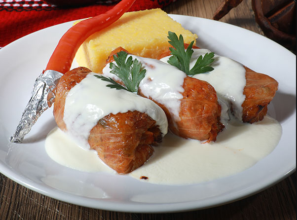

Sarmale

Description
"Delight in a Romanian culinary classic with our flavorful and expertly crafted sarmale. Tender cabbage leaves embrace a delicious filling of seasoned minced meat and rice, creating a savory symphony of taste. Elevate your dining experience with these delectable rolls, a true celebration of tradition and taste."
Ingredients
- 1 fermented cabbage
- 500g minced pork
- 200g rice
- 1 large onion, finely chopped
- 2 cloves of garlic, crushed
- 2 tablespoons tomato paste
- 1 teaspoon sweet paprika
- Salt and pepper, to taste
- 2 bay leaves
- 500ml tomato broth
- Oil for sautéing
- 1 fermented cabbage
Steps
- Separate the cabbage leaves and boil them in salted water until slightly tender. Drain and cut away the thicker parts of the veins.
- auté the onion in oil until golden. Add the garlic and sauté for an additional 1-2 minutes.
- Add the minced meat and brown it until it turns brown.
- Add the rice, tomato paste, paprika, salt, and pepper. Mix well.
- Place a cabbage leaf on a flat surface, add the meat mixture, and roll tightly.
- In a larger pot, arrange the rolled cabbage leaves. Add bay leaves and tomato broth.
- Let it simmer on low heat for about 1-2 hours or until the sarmale are tender, and the flavors meld.
- Serve with sour cream or hot peppers, according to taste.